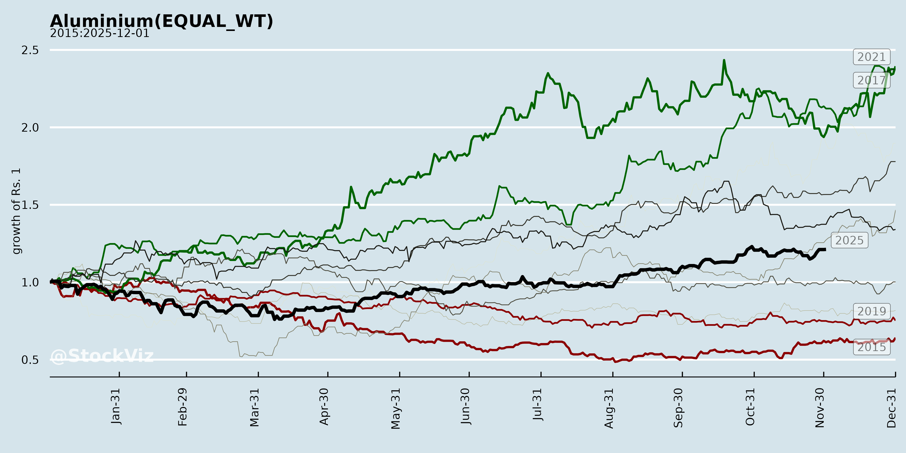
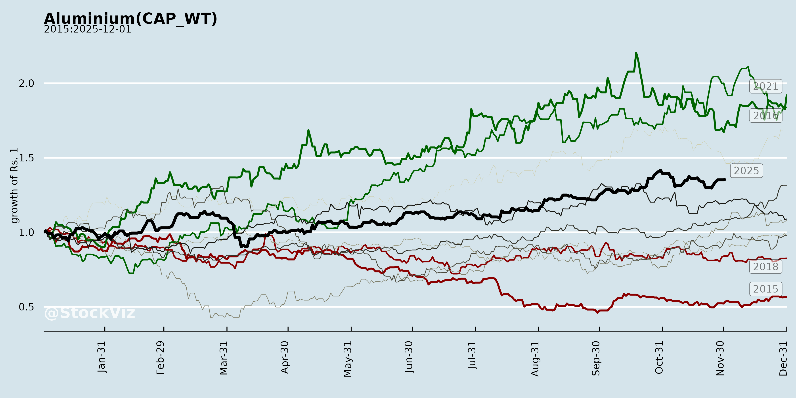
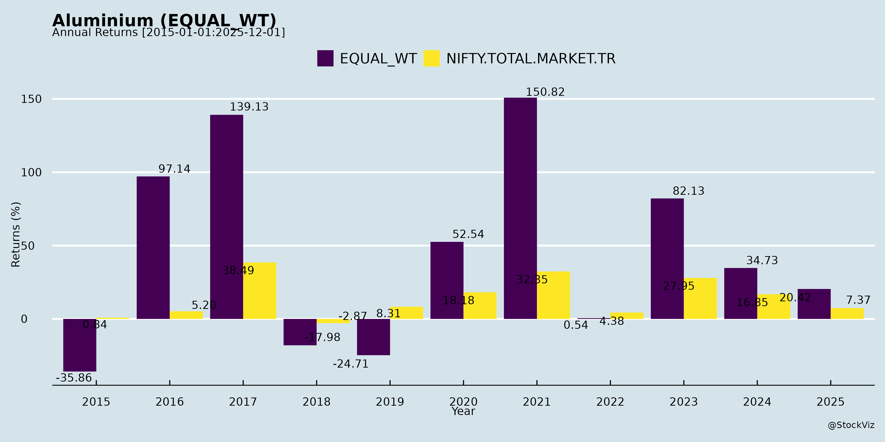
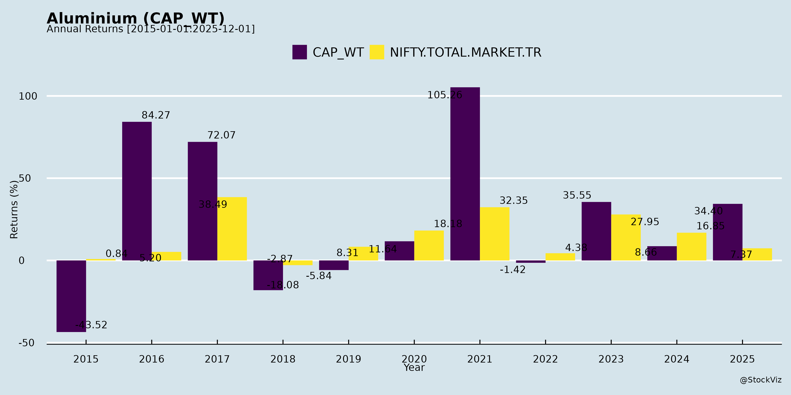
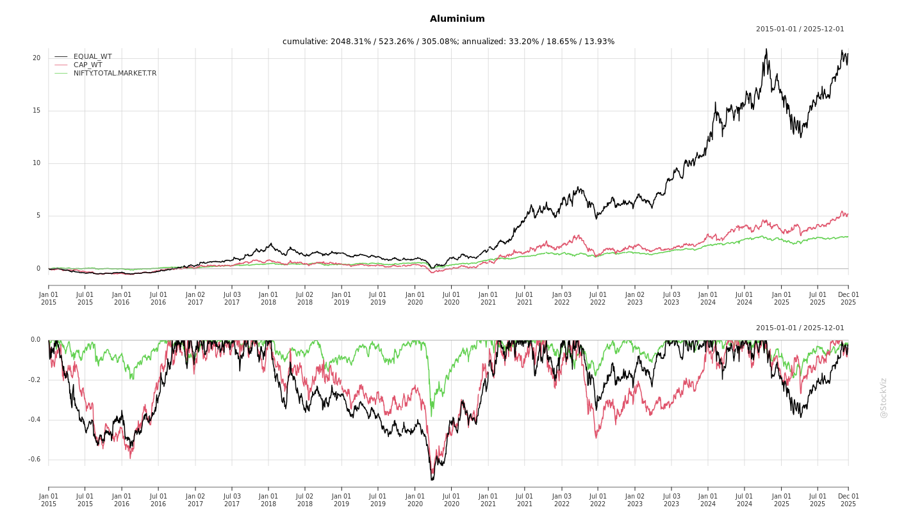
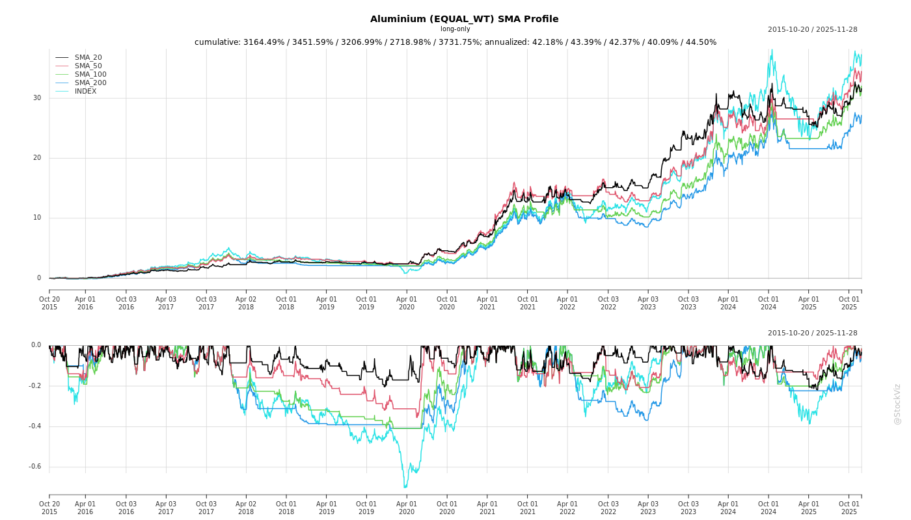
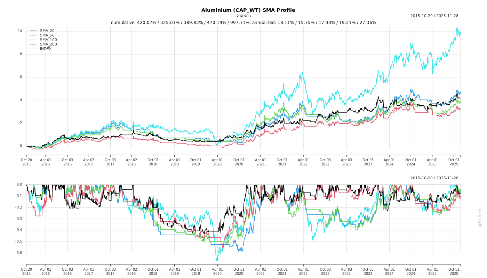
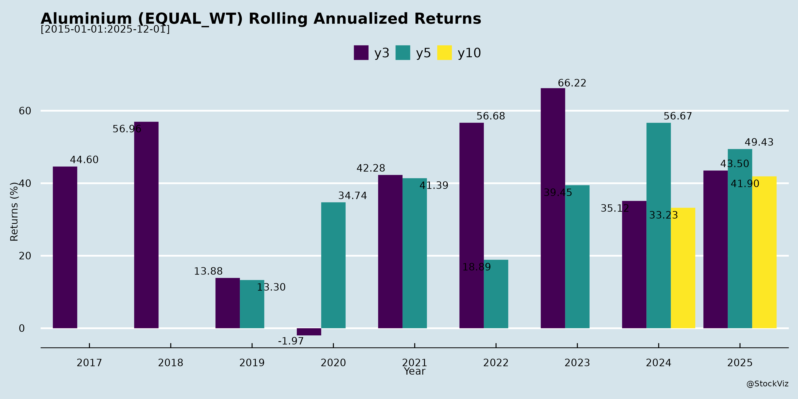
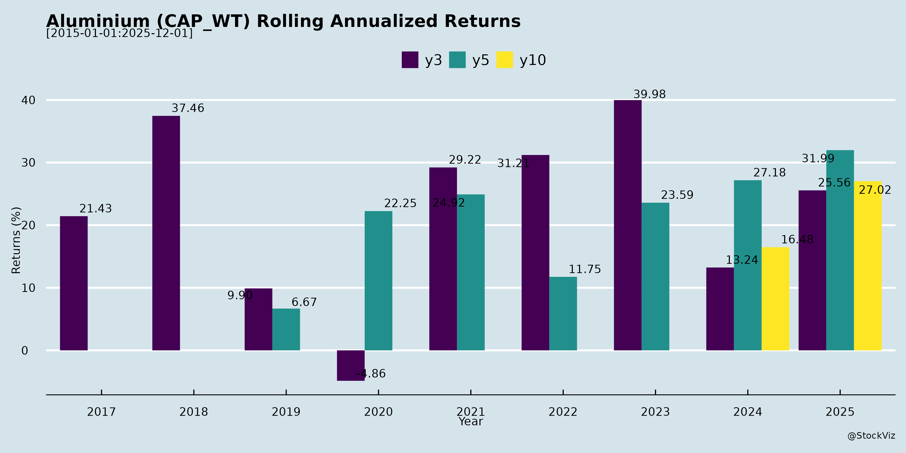

Annual Returns




Cumulative Returns and Drawdowns

SMA Scenarios


Current Distance from SMA
Rolling Returns


EBIT (% of Industry Total)
Revenue (% of Industry Total)
AI Summaries
Analyst
asof: 2025-11-29
Summary Analysis of Indian Aluminium Sector
Using the provided documents (primarily NALCO and Maan Aluminium earnings transcripts, supplemented by Hindalco and MMP announcements), here’s a structured analysis of the Indian Aluminium sector. The sector shows robust upstream production growth (e.g., NALCO’s record H1 FY26) amid expanding downstream value-addition (e.g., Maan), driven by domestic demand tailwinds. However, it faces commodity volatility and trade headwinds.
Tailwinds (Positive Factors)
- Strong Operational Performance & Efficiencies: NALCO reported best-ever Q2/H1 FY26 with +13-31% YoY growth in excavation/alumina/metal production, +18% revenue, and +50% PAT. Key drivers: volume gains (₹700cr), efficiencies (₹300cr), lower caustic consumption (96kg/ton), captive coal ramp-up (4MT target vs. 2.6MT prior), and minimal grid power purchases (saving ₹136cr in H1).
- Domestic Demand Surge: Low per capita Al consumption in India offers huge growth. EV, solar, defense, aerospace, railways, and auto sectors boosting extrusion/value-add demand (Maan entering roof rails, precision tubing as import substitutes).
- Capacity Expansions: NALCO’s refinery (80% complete, June 2026 commissioning; 1MT addition to 3.1MT total) and smelter (0.5MT by 2030, ₹30k cr capex). Maan’s extrusion doubled to 24k TPA; new Dewas/Pithampur plants for value-add (anodizing/machining/powder coating).
- Pricing Support: H1 Al LME averaged ₹2,600/ton (expected ₹2,800-2,900 H2); alumina realizations ~$380/ton Q2 (spot $320 now, recovery to $350 Q3/Q4 expected). Domestic premiums ~10% over LME.
- Policy & Strategic Wins: Make in India push; NALCO’s Argentina lithium JV progressing (pilot plant in 1-1.5yrs); CESS removal on coal saves ₹67cr H2.
Headwinds (Negative Factors)
- Alumina Price Weakness: Oversupply from Indonesia/China refineries and smelter curtailments pressured prices ($320/ton spot vs. $380 Q2); Chinese high-cost refineries may sustain floor ~$300.
- Export Disruptions: US anti-dumping duties (up to 55%) hit Maan (45-50% US exposure), causing volume dips and capacity utilization drop to 27-28% FY26; global recession delayed recovery.
- Demand Fluctuations: Monsoon rains reduced metal sales (NALCO); holiday seasons impacted exports.
- Input Cost Pressures: CP coke (₹42k/ton vs. ₹30k prior), caustic (₹41k/ton); offset partially by efficiencies but risks persistence.
- Utilization & Ramp Challenges: Maan’s new Italian press teething issues; NALCO’s 5th refinery stream targets 0.5MT FY27 (70-80% ramp in 3-4 months).
Growth Prospects
- Volume & Revenue Ramp: NALCO: FY26 alumina sales 12-12.5LT (H2: 6-6.5LT), metal 470kT; post-refinery, +1MT capacity. Maan: 5x revenue in 3-5yrs via value-add (margins vanilla 8-10%, anodizing/machining 15-18% cumulative); 80% utilization by FY29.
- Downstream Value-Add: Shift to high-margin OEMs (EV battery, aero-bridges, sunroofs); Maan as niche player (top-5 extruder, #1 US exporter 2023).
- Capex-Driven Expansion: NALCO ₹5-6k cr equity need (self-funded via ₹20k cr cash by FY27); Maan ₹110cr+ for value-add/precision (first-mover 3-yr lead).
- Diversification: NALCO lithium/rare earths; overall sector CAGR potential from infra/EV/solar (aluminium demand elasticity high).
- Margin Expansion: NALCO alumina margins ₹10-14k/ton; Maan EBITDA back to 15-18% in 2-3yrs.
Key Risks
| Commodity Volatility |
Al LME/alumina price swings ($100/t Al or $10/t alumina impacts profitability); unhedged exposures. |
NALCO/Maan 95-98% hedged via MCX/LME; cost gaps provide buffer. |
| Execution Delays |
Refinery (June 2026), smelter (2030), Maan Dewas (Q1/Q2 FY27); Pottangi mine (June 2026). |
77-80% progress; parallel bauxite sourcing. |
| Trade/Geo-Political |
US ADD/tariffs (demand destruction); mine renewals/royalties (NALCO bauxite to 2029/35, potential 150% hike). |
Diversify to domestic/EU/UK; govt. concessions for PSUs. |
| Cost Inflation |
Coal/caustic/coke spikes; employee costs (NALCO ~18%, retiring workforce). |
Captive coal/power; efficiencies; retirements offset recruitment. |
| Demand/Macro |
Recession, monsoon, global slowdown; inventory liquidation risks. |
Strong domestic OEM pipeline; historical Q3/Q4 recovery. |
Overall Outlook: Bullish medium-term (3-5yrs) with upstream stability (NALCO) fueling downstream growth (Maan-like players). FY26 volumes/pricing supportive, but H2 watch alumina/LME. Sector poised for 15-20%+ CAGR via capex/exports, tempered by trade risks. Hindalco/MMP indicate active investor engagement, signaling confidence.
Financial
asof: 2025-11-29
Indian Aluminium Sector Analysis (Q3 & 9M FY25 Insights from Key Players: Hindalco, NALCO, Maan Aluminium, MMP Industries, Manaksia Aluminium)
Based on the unaudited financial results of these companies (covering ~Dec 2024), the Indian Aluminium sector exhibits robust YoY growth driven by volume expansion, cost efficiencies, and upstream strength, but faces regulatory overhangs and input cost pressures. Majors like Hindalco (global via Novelis) and NALCO dominate positives, while smaller players (Maan, MMP, Manaksia) show steady but modest traction. Aggregate revenue up ~10-40% YoY; PAT surges 50-200%+ for leaders.
Tailwinds (Positive Drivers)
- Strong Demand & Volume Growth: Hindalco’s revenue +10% YoY (Q3: ₹58,390 Cr), NALCO +39% (Q3: ₹4,662 Cr), driven by upstream (bauxite/alumina) and downstream (foils, conductors). Novelis (Hindalco) at ₹34,461 Cr (+5% YoY). Smaller firms like MMP (+20% YoY) and Maan (+segment growth) benefit from domestic infra/auto demand.
- Cost Efficiencies: Raw material costs down (NALCO chemicals segment PAT margin ~51%; Hindalco upstream EBITDA +14%). Lower finance costs (Hindalco -13% YoY).
- Insurance & One-offs: Hindalco’s ₹154 Cr flood recovery; land sale gains (₹573 Cr).
- Policy Support: Odisha incentives; solar/open-access power investments (MMP ₹40 Cr project).
Headwinds (Challenges)
- Input Cost Pressures: Power/fuel remains 6-18% of expenses (Hindalco ₹3,770 Cr Q3; NALCO ₹827 Cr). Provisions for electricity duty (Hindalco/NALCO ₹197 Cr).
- Operational Disruptions: Hindalco’s Switzerland flood (₹250 Cr impairment, ₹1,005 Cr total costs 9M); inventory writedowns.
- Margin Compression QoQ: Hindalco EBITDA margin dipped to 9% (from 11%); smaller firms volatile (Manaksia EBITDA ~1.5%).
- Global Exposure: Forex/hedging volatility (Hindalco OCI loss ₹857 Cr Q3); Novelis CHF loan aid tied to flood recovery.
Growth Prospects
- Capacity & Diversification: Hindalco upstream (₹27,957 Cr 9M rev., +17% YoY); NALCO chemicals (₹5,071 Cr, +32% YoY). Downstream (foils/conductors) scaling—MMP LVPC project (₹87 Cr), Maan single-segment focus.
- Exports & Value-Add: Novelis global strength (51% of Hindalco rev.); NALCO JVs (e.g., GACL CCDs ₹500 Cr).
- Sustainability: Solar/wind (despite PPA delays); renewables JVs (NALCO Utkarsha).
- Outlook: 10-15% sector growth FY25 (infra, EV, renewables demand); Hindalco/NALCO guide strong EBITDA (₹25,000+ Cr 9M).
Key Risks
| Regulatory/Legal |
ORISED Act (mineral tax, retrospective; staggered payments from 2026)—no provision yet (Hindalco/NALCO). Wind PPA delays (NALCO ₹106 Cr extra impairment). Electricity duty ambiguity. |
High (NALCO/Hindalco upstream). |
| Commodity Volatility |
Alumina/LME prices, power costs (30-40% opex). |
Medium-High (all). |
| Operational |
Disruptions (floods, plant halts); impairments (Hindalco ₹223 Cr 9M). |
Medium (global ops). |
| Forex/Debt |
Debt ₹73,392 Cr (Hindalco); USD/CHF exposure. |
High (Hindalco). |
| Liquidity/Tax |
MAT credit reversals (Hindalco ₹239 Cr writeback); high capex. |
Medium. |
| Competition |
Chinese dumping; imports pressure smaller players (Maan/MMP margins <5%). |
Medium (downstream). |
Summary: Sector resilient with tailwind dominance (demand/cost leverage → PAT +50-200% YoY), positioning for 12-15% growth FY25 amid infra boom. Headwinds moderate (costs offset by efficiencies), but regulatory risks (ORISED/PPA) loom large—monitor SC hearings. Smaller firms lag on scale but eye niche growth. Bullish outlook; watch LME (~$2,500/t) and power reforms. (Data as of Feb 2025 filings; Ind AS compliant, unmodified reviews.)
Analysis of Indian Aluminium Sector (Based on Provided Documents)
The documents primarily cover Novelis Inc. (wholly-owned subsidiary of Hindalco Industries Ltd.), National Aluminium Company Ltd. (Nalco), Maan Aluminium Ltd., and MMP Industries Ltd.. Novelis dominates the input (~95%), providing deep insights into global operations with Indian parentage (Hindalco-listed). Analysis focuses on headwinds (challenges), tailwinds (supports), growth prospects (opportunities), and key risks for the Indian Aluminium sector, emphasizing rolled products, recycling, and end-markets like packaging, automotive, and aerospace.
Headwinds (Short-Term Pressures)
- Cost Inflation & Input Challenges: Novelis reports higher scrap prices reducing metal benefits (less favorable vs. prior year), net tariffs (e.g., US Customs duties on Brazilian shipments ~$19M possible exposure), and elevated conversion costs (up due to inefficiencies). H1FY26 metal input costs rose $944M YoY.
- Operational Disruptions: Oswego (NY) fire (Sep 2025) → $550-650M negative cash flow impact (H2FY26), $100-150M EBITDA hit; expected restart Dec 2025. Past Sierre (Switzerland) flood ($101M prior-year charges). MMP Industries: Factory incident (Apr 2025) delayed Umred plant restart until May 31, 2025.
- Restructuring & One-Offs: Novelis’ 2025 Efficiency Plan → $116M H1 charges (cumulative $113M); plant closures (e.g., Richmond/Fairmont, Changzhou idling).
- Demand/Mix Weakness: Lower automotive/specialty shipments (customer production halts in Europe/Asia); flat rolled product shipments stable but mix unfavorable.
- Regulatory Fines: Nalco fined ₹10.86L (incl. GST) by BSE/NSE for Reg 17(1) non-compliance (board composition, Q2FY26).
Impact: Q2FY26 Adjusted EBITDA down 9% YoY ($422M); H1 down 13% ($838M). Nalco/MMP minor but signal compliance/ops risks.
Tailwinds (Positive Supports)
- Pricing Power: Novelis net sales +10% Q2/$12% H1 YoY, driven by +143%/+126% LMP surges and +10%/+3% LME prices. Favorable hedging ($158M H1 gain).
- Volume Resilience: Flat rolled shipments stable (941kt Q2, 1,904kt H1); gains in beverage packaging (+ in Europe/Asia), aerospace (OEM backlogs).
- Cost Efficiencies: 2025 Plan targeting $300M annualized savings by FY28 (labor/ops/footprint); SG&A down 5%/4% YoY. Lower interest expense (6% YoY).
- Financing Flexibility: Novelis liquidity $2.9B; new bonds ($500M Series 2025A/B), term loan repricing (margin cut to SOFR+1.75%). Nalco/Maan routine disclosures (no major issues).
- Sustainability Edge: High recycled content (63% FY25, targeting 75% by 2030); ASI certifications (22 plants).
Impact: Q2 net income +27% ($163M); H1 + beverage/price offsets volume/mix headwinds.
Growth Prospects (Medium/Long-Term Opportunities)
- Demand Drivers: Strong aluminum substitution (lightweighting, sustainability vs. PET/steel). Beverage packaging resilient (recyclable); automotive/aerospace growth (fleet modernization, backlogs at Airbus/Boeing). Novelis: Bay Minette (Alabama) greenfield (600kt capacity, ~$5B capex) advancing; FY26 capex $1.9-2.2B for expansions/recycling.
- Efficiency/Capacity Ramp: Multi-year investments (debottlenecking, scrap processing tech). Novelis FY26 EBITDA outlook tied to ~80% capacity utilization post-disruptions.
- Sustainability Leadership: Carbon neutral by 2050 (<3t CO2e/t by 2030); circular economy (recycling in 15/29 facilities). Indian peers (Nalco) benefit from govt. push (e.g., PLI schemes).
- Export/Regional: Asia/South America shipments +12%/+11% Q2; Brazil ops resilient post-tariff notice.
- Sector Tailwinds: Global Al demand +2-3% CAGR; India-specific (auto/EV, infra) via Hindalco/Nalco.
Outlook: Novelis targets sustained margins via premiums (LMP/conversion); sector growth 4-6% CAGR to 2030 on green transition.
Key Risks (High-Impact Threats)
| Operational |
Fires/floods (Oswego/Sierre/MMP); scrap competition (higher prices, lower availability). |
Insurance (recoveries noted); recycling expansions. |
| Geopolitical/Trade |
Tariffs/duties (US on Brazil ~$22M deposit +$19M possible; general trade barriers). |
Hedging; exemptions advocacy. |
| Financial |
Debt ($6.9B total; leverage ~3.5x target, but fire/tariffs may exceed); FX volatility (EUR/BRL/KRW). |
$2.9B liquidity; repricings. |
| Market/Demand |
Automotive slowdowns (OEM halts); scrap economics pressure costs. |
Diversification (beverage 50%+ mix). |
| Regulatory/Compliance |
SEBI fines (Nalco); env./tax litigations (Novelis $118M possible). |
Efficiency plan; legal appeals. |
| Execution |
Capex overruns (Bay Minette); start-up costs ($13M H1 excluded from EBITDA). |
Phased spend; maintenance $300M. |
Overall Summary: Indian Aluminium (via Hindalco/Novelis) faces near-term headwinds from disruptions/costs (EBITDA pressure), but tailwinds from pricing/volumes support resilience. Growth prospects strong on sustainability/demand (e.g., Bay Minette), targeting $300M savings. Key Watch: Oswego recovery, tariffs, scrap dynamics. Sector leverage moderate; long-term positive on green Al shift. Nalco/Maan/MMP minor; no systemic red flags.
Data as of Sep 30, 2025 (Q2FY26); FY26 guidance intact despite disruptions.
Investor
asof: 2025-11-29
Indian Aluminium Industry Analysis
Using the provided documents from key players (Hindalco, NALCO, MAAN Aluminium, and MMP Industries – though the latter offers limited insights), here’s a synthesized analysis of the Indian Aluminium sector. The sector benefits from India’s low per-capita consumption (~2.5 kg vs. global ~9 kg), robust domestic demand drivers (EV, infra, defence), and global supply-demand balance, but faces cyclical commodity pressures. Hindalco (integrated giant with Novelis) and NALCO (upstream-focused CPSE) dominate upstream/midstream, while MAAN highlights downstream extrusion/value-add challenges.
Tailwinds (Positive Drivers)
- Strong Demand Momentum: Global aluminium FRP demand +1-4% (beverage cans +4%, auto/aerospace 3-5%). India-specific: EV battery enclosures (110 kg/car, 150K cars p.a. awarded), BESS, solar, defence (ISRO/DRDO), roof rails (100% import substitute). Hindalco/NALCO cite rising infra, PLI schemes, Atmanirbhar Bharat.
- Capacity & Efficiency Ramp-Up: Hindalco’s $10B growth capex (India upstream >2MT, Novelis Bay Minette 600KT by FY27); NALCO refinery to 3.1MT (June 2026), smelter +0.5MT by 2030; MAAN extrusion doubled to 24KT (value-add focus: anodizing, machining). High ROIC (Hindalco EBITDA/t $600+), captive coal (NALCO/Hindalco self-sufficiency by FY33).
- Cost & Sustainability Edge: Recycling push (Novelis 75% recycled by 2030, Hindalco 75% avg.); low-carbon goals (<3 tCO2e/t); captive coal/renewables reduce energy costs (Hindalco FY33: >30% renewables). NALCO/Hindalco report margin buffers (alumina $10-14K/t).
- Financial Strength: Hindalco #5 Nifty PAT rank (H1 $1B), ROCE 19.6%, low leverage (1.23x); NALCO record H1 PAT +50%, cash ~₹7,900 Cr. Attractive valuations (Hindalco P/E 10x vs. Nifty 68x).
- Policy Support: Coal mines allocation, CESS removal benefits (~₹67 Cr savings for NALCO).
Headwinds (Challenges)
- Price Volatility & Weak Alumina: Alumina spot ~$320/t (down from $380/t Q2); surplus from Indonesia/China refineries offsets deficits. LME ~$2,500-2,900/t, but construction weak (China/Europe/NA).
- Export Pressures: US anti-dumping duties (25-50%) caused MAAN’s export revenue drop (70%→45-50%), demand destruction/holiday slowdown. Global transport soft.
- Input Cost Inflation: CP coke +37% (₹30K→42K/t), caustic +11% (NALCO). Monsoon impacts metal sales (rain-reduced demand).
- Utilization Dips: MAAN at 27-28% post-expansion (ramping to 80% by FY29); Hindalco/NALCO managing inventory (NALCO sells ~50% production ex-smelter).
- Macro Slowdown: China construction weak; global surplus in RoW offsets China deficits.
Growth Prospects
- Volume/EBITDA Expansion: Hindalco non-LME EBITDA ~70% of mix; Novelis EBITDA/t to $600+ long-term; India downstream >800KT (battery foil, EV enclosures). NALCO alumina sales 12-13LT FY26 (+81% YoY H1), metal 470KT. MAAN targets 5x revenue in 3-5 years via value-add (powder coating, machining; margins 15-18%).
- High-Margin Segments: EV/auto (3-5% demand), aerospace/defence (GDP+), specialties (battery foil 40KT by 2033). Hindalco copper/specialty alumina >1.2MT/>1MT.
- Timeline: Short-term (FY26-27): NALCO 5LT incremental alumina, Hindalco Bay Minette/Guthrie online. Medium-term (FY28-30): Full ramps, smelter expansions, precision tubing (MAAN import substitute).
- Capex Outlook: Hindalco $6.2B India projects; NALCO ₹30K Cr (smelter+CPP); MAAN ₹110 Cr value-add. FCF supports (Hindalco $2B consol.).
| Hindalco Upstream Al |
1.34MT |
>2MT |
| NALCO Refinery |
2.1MT |
3.1MT+ |
| MAAN Extrusion |
24KT |
80% util. + value-add |
Key Risks
- Commodity Volatility: $100/t alumina or LME swings impact margins (NALCO: buffered but sensitive); hedging limited (NALCO none).
- Execution Delays/Cost Overruns: Mega capex (e.g., Hindalco Bay Minette $5B, NALCO refinery 80% complete but pushed to Jun’26; Pottangi mine Jun’26).
- Geopolitical/Trade: US tariffs (MAAN: no further hikes expected >50%); China supply dominance.
- Demand Destruction: Recession in NA/Europe; monsoon/rain impacts (metal sales dip).
- Input/Regulatory: Bauxite mine renewals (NALCO ’29/’35, potential 150% royalty hike); coal/caustic inflation.
- Leverage/FCF: Hindalco targets 2x net debt/EBITDA; capex funding via FCF/JV (NALCO: equity/debt mix).
- Competition: Import substitution lags; low domestic premiums (~10%).
Summary
Bullish Long-Term Outlook: Tailwinds from domestic demand (EV/infra), expansions, and sustainability outweigh cyclical headwinds. Sector poised for 10-20% volume CAGR (FY26-30), with EBITDA/t uplift via value-add/recycling. Hindalco/NALCO lead upstream; MAAN exemplifies downstream potential. Near-Term Caution: Alumina weakness, export duties cap FY26 upside (NALCO H2 alumina $320-340/t). Investment Thesis: Attractive for 3-5yr horizon (low valuations, ROCE>15%); monitor LME/alumina (> $350/t ideal) and capex execution. Risks mitigated by strong balance sheets (cash buffers, low debt).
Safe Harbor: Forward-looking; actuals may differ per macro/events.
Press Release
asof: 2025-11-29
Indian Aluminium Sector Analysis: Headwinds, Tailwinds, Growth Prospects, and Key Risks
Using the provided documents from Hindalco Industries (leading private player), NALCO (leading PSU), and MMP Industries (mid/small-cap downstream player) as inputs, here’s a concise analysis of the Indian aluminium sector for Q2/H1 FY26 (ended Sep 2025). These reflect robust operational performance amid global volatility, with upstream strength and downstream diversification driving resilience. Overall, the sector shows resilient growth (revenue/PAT up 13-30% YoY across players), supported by domestic demand but tempered by external pressures.
Tailwinds (Positive Drivers)
- Strong Upstream Margins & Cost Discipline: Hindalco’s Aluminium Upstream EBITDA/tonne at $1,521 (up 13% YoY, 45% margins – industry-best), driven by higher volumes/realisations. NALCO’s “best-ever” Q2/H1 performance underscores PSU efficiency.
- Downstream Volume/Mix Gains: Hindalco Downstream EBITDA up 69% (record ₹261 Cr); MMP Foil revenue up sharply, Powders ~60% of revenue with 20-25% H2 growth expected.
- Domestic Demand Surge: Infra/housing (PM Awas Yojana, coal production to 1.5bn tons by 2030), EVs (lightweighting), renewables (solar/wind conductors), packaging/pharma (foils). MMP notes AAC blocks demand from fly ash mandates (GST cut to 12%).
- Policy/Export Support: Anti-dumping duties on Chinese foils (MMP/Hindalco benefit); govt initiatives (Make in India, mining infra). Record dividends (NALCO ₹1,928 Cr FY25) signal PSU health.
- Sustainability Edge: Hindalco/NALCO/MMP emphasize recycling, zero emissions, solar (MMP 20% energy from 5.5MW, expanding to 40-50%).
Headwinds (Challenges)
- Global Volatility & Pricing Pressures: Hindalco revenue up but Novelis EBITDA down 9% due to tariffs; Copper EBITDA in-line despite declining TC/RCs. MMP H1 PAT down 91% YoY from fire loss (₹17 Cr, insured) & pricing pressure in foils.
- External Shocks: MMP fire (Apr 2025) caused shutdown; monsoon delays in conductors. Novelis shipments flat YoY.
- Margin Compression: MMP EBITDA margin 7.1% (down from 9.8% H1 FY25); Hindalco EBITDA up 6% but slower than PAT.
- Input/Cost Volatility: Higher finance costs (MMP up due to expansions); global aluminium price fluctuations.
Growth Prospects
- Capacity Expansions: Hindalco Aditya Phase 2 (193KT, ₹10,225 Cr, FY29); MMP insulators (10L units), conductors (+1,200 MTPA Q4FY26), solar (7MW Q2FY27), wire rods (₹13-15 Cr backward integration). NALCO interim dividend signals reinvestment potential.
- Diversification: MMP into high-margin insulators (400kV approvals Dec 2025), LVPC cables; Hindalco Novelis cost savings ($125Mn FY26, $300Mn FY28); powders for ISRO/Europe exports.
- Sector Outlook: India aluminium demand CAGR 6-7% to $39Bn by 2032E (MMP); EVs/renewables/infra to drive 20-25% segment growth (powders/conductors). H2FY26 rebound expected (MMP revenue double in conductors).
- EBITDA/PAT Momentum: Hindalco PAT +21% Q2; MMP Q2 PAT +20%; stable Net Debt/EBITDA (Hindalco 1.23x).
Key Risks
| Operational |
Fire/incidents (MMP ₹17 Cr loss); monsoon/project delays. |
Insurance coverage; diversified plants (MMP 4 units). |
| Commodity/Market |
Aluminium price volatility; import competition (China foils/tariffs). |
Cost efficiencies (Novelis); anti-dumping duties; domestic focus. |
| Financial |
Rising debt (MMP LT borrowings to ₹39 Cr); forex/tariff impacts (Novelis). |
Healthy cash flows (MMP ₹25 Cr H1 ops); low leverage (Hindalco). |
| Execution |
Expansion delays (MMP Phase II Q4FY26); export reliance (MMP Europe). |
Strong order book (record powder exports); JV partnerships (Toyo). |
| Macro/Regulatory |
Global volatility; GST/tax changes; EV/infra policy shifts. |
Integrated model (Hindalco); govt ties (NALCO 51% GoI stake). |
Summary: Indian aluminium sector is bullish short-term (Q2 PAT/revenue growth 20%+/13% across players) with strong tailwinds from domestic infra/EVs/sustainability, offsetting headwinds like tariffs/volatility. Growth prospects high (CAGR 6-32% via expansions/diversification), targeting H2FY26 acceleration. Key risks manageable (operational/financial, insured/leveraged low), but monitor global prices/execution. Outlook: Positive, with Hindalco/NALCO as upstream anchors, MMP exemplifying downstream agility. Sector poised for resilient expansion amid India’s capex cycle.
Copyright © 2023 SAS Data Analytics Pvt. Ltd. All rights reserved.
🐞